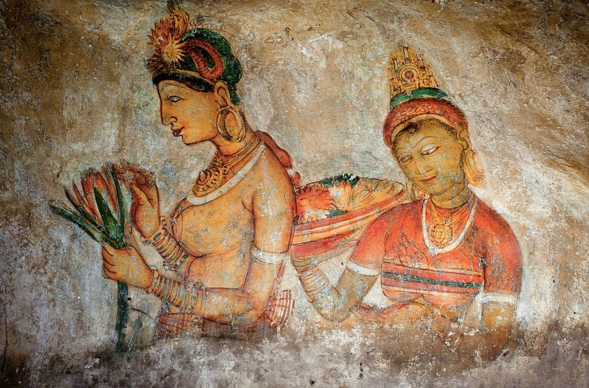

Breathtaking 1,500-year-old paintings of celestial maidens, preserved on the sheltered rock face.
Halfway up the Sigiriya rock, in a sheltered gallery of the Western rock face, lie the remains of a once-extensive gallery of paintings. These are the world-famous Sigiriya Frescoes, depicting celestial maidens (apsaras) carrying flowers and trays of fruit.
The paintings exhibit an extraordinary level of skill and are considered some of the finest examples of ancient Sri Lankan art. The vibrant colours, created from natural pigments, have survived for over 1,500 years despite their exposure to the elements and the passage of time.
Back to Sigiriya Hub